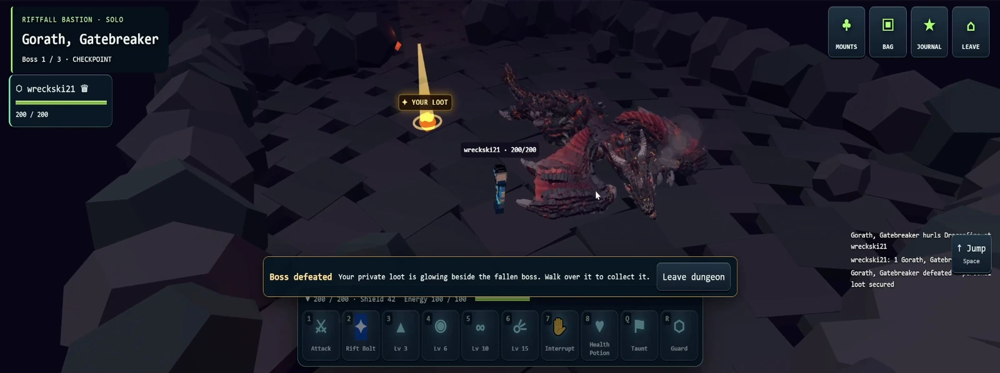

From action to feedback
Character movement and ability use sit alongside animation and interface feedback. The clip shows these pieces running together rather than as isolated animation renders.
3D / Gameplay & character systems
A dragon encounter where gameplay scripting meets character rigging and animation.
A solo dragon encounter from the prototype. The clip includes arena entry, combat, ability feedback and the encounter conclusion. Browser chrome has been removed; the gameplay interface is retained.
01:20 / SILENT CAPTURE01 / Contribution scope
Capture context: solo play in the development build.
02 / In the footage
The player approaches a dragon in a stone arena, moves around it, and uses an action bar during the encounter. Damage numbers, character motion and interface feedback make the changing encounter state visible. The sequence ends with the dragon falling and a completion message.
Development capture / September 2026. Cropped for viewing and shown at normal playback speed.
03 / Development notes
Character movement and ability use sit alongside animation and interface feedback. The clip shows these pieces running together rather than as isolated animation renders.
The dragon is shown reacting and moving inside the encounter. My rigging and animation work is presented alongside the gameplay behavior it supports.
The capture shows a beginning, an active encounter and a conclusion. It is work in progress, with prototype visuals and interface.
04 / From the project


Keep exploring / Project 02
Next level / Let’s work together